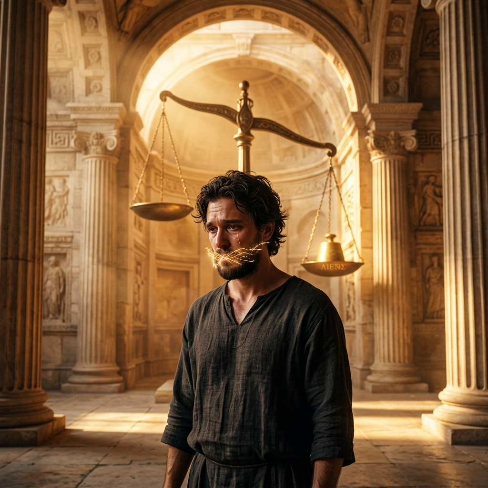
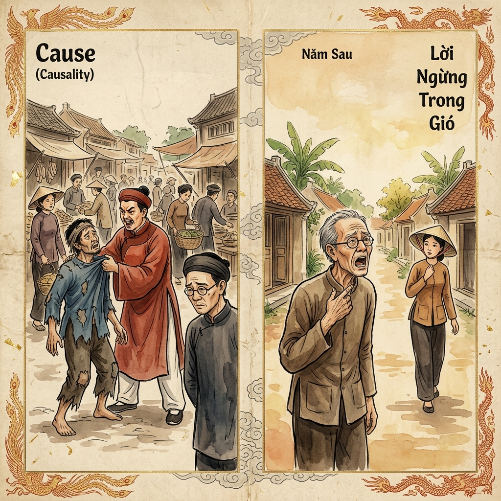
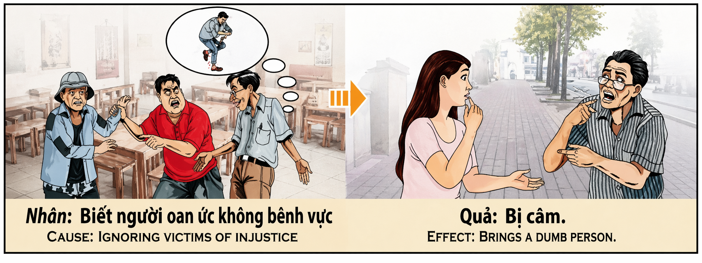

El Silencio Cómplice de la Injusticia The Complacent Silence of Injustice Il Silenzio Complice dell'Ingiustizia 对不公正的默许沉默 الصمت المتواطئ مع الظلم Молчаливое соучастие в несправедливости Das komplizenhafte Schweigen der Ungerechtigkeit Le Silence Complice de l'Injustice 不公正に対する黙認という共犯 O Silêncio Cúmplice da Injustiça Sự Im Lặng Đồng Lõa Trước Bất Công
"Quien calla ante la injusticia, apaga la luz de su propia voz; el silencio no es neutral, es el refugio del opresor." "He who remains silent before injustice extinguishes the light of his own voice; silence is not neutral, it is the refuge of the oppressor." "Chi tace davanti all'ingiustizia spegne la luce della propria voce; il silenzio non è neutrale, è il rifugio dell'oppressore." “在不公正面前保持沉默的人熄灭了自己声音的光芒；沉默并非中立，它是压迫者的避难所。” "من يصمت أمام الظلم يطفئ نور صوته؛ الصمت ليس حياداً، بل هو ملاذ الظالم." «Тот, кто молчит перед лицом несправедливости, гасит свет своего собственного голоса; молчание не нейтрально, оно — убежище угнетателя». "Wer angesichts von Ungerechtigkeit schweigt, löscht das Licht der eigenen Stimme aus; Schweigen ist nicht neutral, es ist die Zuflucht des Unterdrückers." "Celui qui se tait devant l'injustice éteint la lumière de sa propre voix ; le silence n'est pas neutre, il est le refuge de l'oppresseur." 「不公正を前に沈黙する者は、自らの声の光を消す。沈黙は中立ではなく、抑圧者の隠れ家である。」 "Quem se cala perante a injustiça apaga la luz da sua própria voz; o silêncio não é neutro, é o refúgio do opressor." "Ai im lặng trước bất công là đang tự dập tắt ánh sáng của chính tiếng nói mình; sự im lặng không hề trung lập, nó là nơi trú ẩn của kẻ áp bức."
La voz humana es el puente sagrado entre el pensamiento y la justicia, un don divino que nos permite dar testimonio de la Verdad en un mundo a menudo oscurecido por el error. Sin embargo, existe un veneno invisible que corroe el alma con más fuerza que la mentira misma: el silencio cómplice. Callar cuando vemos a un hermano ser injustamente vejado no es un acto de prudencia ni de sabiduría, sino una traición a nuestro propósito más profundo como seres conscientes. El universo nos ha otorgado el lenguaje para ser escudos de los inocentes, no para escondernos tras la comodidad del anonimato.
La ley del karma, en su precisión cristalina, no castiga los errores con ira, sino que nos devuelve la vibración exacta que emitimos al mundo. Cuando decidimos ser mudos ante el dolor ajeno para proteger nuestra pequeña seguridad personal, el universo interpreta que hemos renunciado a la facultad de hablar. El mecanismo es profundo y simbólico: si tu voz no sirve para defender lo que es justo, pierde su razón de ser en la sinfonía de la creación. Al negar nuestra palabra a quien la necesitaba para sobrevivir a una mentira, estamos asfixiando nuestra propia capacidad de comunicación futura.
El "antes" de este karma es una vida de aparente calma, donde el individuo evita conflictos a costa de su integridad, creyendo que su silencio lo mantiene a salvo. El "después" es la soledad del alma muda: una desconexión total donde, aunque la garganta emita sonidos, nadie escucha la esencia, o físicamente el habla se retira. Para alinear nuestra vida con el propósito luminoso, debemos entender que la neutralidad ante la injusticia no existe; o somos la voz de la verdad o somos el eco de la tiranía. Solo al usar nuestra palabra con valentía, aseguramos que el universo mantenga abierto el canal de nuestra propia expresión sagrada.
The human voice is the sacred bridge between thought and justice, a divine gift that allows us to bear witness to the Truth in a world often darkened by error. However, there is an invisible poison that corrodes the soul more strongly than the lie itself: complacent silence. To remain silent when we see a brother being unjustly vexed is not an act of prudence or wisdom, but a betrayal of our deepest purpose as conscious beings. The universe has granted us language to be shields for the innocent, not to hide behind the comfort of anonymity.
The law of karma, in its crystalline precision, does not punish errors with anger, but rather returns to us the exact vibration we emit to the world. When we choose to be mute before the pain of others to protect our own small personal security, the universe interprets that we have renounced the faculty of speech. The mechanism is profound and symbolic: if your voice does not serve to defend what is just, it loses its reason for being in the symphony of creation. By denying our word to those who needed it to survive a lie, we are suffocating our own future capacity for communication.
The "before" of this karma is a life of apparent calm, where the individual avoids conflict at the cost of their integrity, believing that their silence keeps them safe. The "after" is the loneliness of the mute soul: a total disconnection where, even if the throat emits sounds, no one hears the essence, or physically the speech is withdrawn. To align our lives with a luminous purpose, we must understand that neutrality before injustice does not exist; either we are the voice of truth or we are the echo of tyranny. Only by using our word with courage do we ensure that the universe keeps the channel of our own sacred expression open.
La voce umana è il ponte sacro tra il pensiero e la giustizia, un dono divino che ci permette di testimoniare la Verità in un mondo spesso oscurato dall'errore. Tuttavia, esiste un veleno invisibile che corrode l'anima con più forza della menzogna stessa: il silenzio complice. Tacere quando vediamo un fratello essere ingiustamente vessato non è un atto di prudenza né di saggezza, ma un tradimento del nostro scopo più profondo come esseri senzienti. L'universo ci ha concesso il linguaggio per essere scudi degli innocenti, non per nasconderci dietro la comodità dell'anonimato.
人类的声音是思想与正义之间的神圣桥梁，是一份神圣的礼物，让我们在经常被错误笼罩的世界中见证真理。然而，有一种无形的毒药比谎言本身更能强烈地侵蚀灵魂：默许的沉默。当我们看到同胞受到不公正的折磨时保持沉默，这既不是审慎也不是智慧的行为，而是对我们作为有意识生物最深层使命的背叛。宇宙赋予我们语言是为了让我们成为无辜者的盾牌，而不是躲在匿名的舒适区之后。
الصوت البشري هو الجسر المقدس بين الفكر والعدالة، وهو هبة إلهية تسمح لنا بالشهادة للحق في عالم غالباً ما يظلمه الخطأ. ومع ذلك، هناك سم غير مرئي ينخر الروح بقوة أكبر من الكذب نفسه: الصمت المتواطئ. إن الصمت عندما نرى أخاً يُظلم ليس عملاً من أعمال الحكمة أو التعقل، بل هو خيانة لغرضنا الأعمق ككائنات واعية. لقد منحنا الكون اللغة لنكون دروعاً للأبرياء، لا لنختبئ خلف راحة المجهول.
Человеческий голос — это священный мост между мыслью и справедливостью, божественный дар, позволяющий нам свидетельствовать об Истине в мире, часто омраченном заблуждениями. Однако существует невидимый яд, который разъедает душу сильнее, чем сама ложь: молчаливое соучастие. Молчать, когда мы видим, как несправедливо притесняют ближнего, — это не акт благоразумия или мудрости, а предательство нашей высшей цели как сознательных существ. Вселенная наделила нас языком, чтобы мы были щитом для невинных, а не для того, чтобы мы прятались за удобством анонимности.
Die menschliche Stimme ist die heilige Brücke zwischen Denken und Gerechtigkeit, ein göttliches Geschenk, das es uns ermöglicht, in einer oft von Irrtümern verdunkelten Welt Zeugnis für die Wahrheit abzulegen. Es gibt jedoch ein unsichtbares Gift, das die Seele stärker zerfrisst als die Lüge selbst: das komplizenhafte Schweigen. Zu schweigen, wenn wir sehen, wie ein Bruder ungerecht schikaniert wird, ist weder ein Akt der Klugheit noch der Weisheit, sondern ein Verrat an unserer tiefsten Bestimmung als bewusste Wesen. Das Universum hat uns die Sprache verliehen, damit wir Schilde für die Unschuldigen sind, und nicht, um uns hinter der Bequemlichkeit der Anonymität zu verstecken.
La voix humaine est le pont sacré entre la pensée et la justice, un don divin qui nous permet de témoigner de la Vérité dans un monde souvent obscurci par l'erreur. Cependant, il existe un poison invisible qui corrode l'âme avec plus de force que le mensonge lui-même : le silence complice. Se taire lorsque nous voyons un frère être injustement brimé n'est pas un acte de prudence ni de sagesse, mais une trahison de notre mission la plus profonde en tant qu'êtres conscients. L'univers nous a accordé le langage pour être les boucliers des innocents, non pour nous cacher derrière le confort de l'anonymat.
人間の声は思考と正義の間の神聖な架け橋であり、過ちに覆われがちな世界で真理を証言することを可能にする神聖な贈り物です。しかし、嘘そのものよりも強く魂を蝕む目に見えない毒が存在します。それが「黙認」という沈黙です。同胞が不当に苦しめられているのを見て沈黙することは、慎重さでも知恵でもなく、意識ある存在としての私たちの最も深い目的への裏切りです。宇宙が私たちに言語を授けたのは、無実の人々の盾となるためであり、匿名の快適さの背後に隠れるためではありません。
A voz humana é a ponte sagrada entre o pensamento e a justiça, um dom divino que nos permite dar testemunho da Verdade num mundo frequentemente obscurecido pelo erro. No entanto, existe un veneno invisível que corrói a alma com mais força do que a própria mentira: o silêncio cúmplice. Calar quando vemos um irmão ser injustamente maltratado não è un atto di prudenza né di saggezza, ma una traição ao nosso propósito mais profundo como seres conscientes. O universo concedeu-nos a linguagem para sermos escudos dos inocentes, não para nos escondermos atrás do conforto do anonimato.
Tiếng nói con người là chiếc cầu nối thiêng liêng giữa tư tưởng và công lý, một món quà thiên liêng cho phép chúng ta làm chứng cho Sự Thật trong một thế giới thường bị lu mờ bởi những sai lầm. Tuy nhiên, có một loại độc dược vô hình ăn mòn tâm hồn mạnh mẽ hơn cả lời nói dối: sự im lặng đồng lõa. Im lặng khi thấy một người anh em bị ngược đãi bất công không phải là hành động thận trọng hay khôn ngoan, mà là sự phản bội mục đích sâu xa nhất của chúng ta với tư cách là những sinh linh có ý thức. Vũ trụ ban cho chúng ta ngôn ngữ để làm lá chắn cho những người vô tội, chứ không phải để trốn tránh sau sự thoải mái của bóng tối vô danh.
La legge del karma, nella sua precisione cristallina, non punisce gli errori con rabbia, ma ci restituisce l'esatta vibrazione che emettiamo nel mondo. Quando decidiamo di essere muti davanti al dolore altrui per proteggere la nostra piccola sicurezza personale, l'universo interpreta che abbiamo rinunciato alla facoltà di parlare. Il meccanismo è profondo e simbolico: se la tua voce non serve a difendere ciò che è giusto, perde la sua ragione d'essere nella sinfonia della creazione. Negando la nostra parola a chi ne aveva bisogno per sopravvivere a una menzogna, stiamo soffocando la nostra stessa capacità di comunicazione futura.
业力法则以其如水晶般精确的方式，不是用愤怒来惩罚错误，而是向我们反馈我们向世界发出的精确振动。当我们为了保护自己微小的个人安全而选择在他人的痛苦面前保持沉默时，宇宙就会解读为我们已经放弃了说话的能力。这种机制深奥且具有象征意义：如果你的声音不能用来捍卫公正的事物，那么它在创作的交响乐中就失去了存在的理由。通过对那些需要我们的言语来度过谎言的人保持沉默，我们正在扼杀自己未来的沟通能力。
قانون الكرمة، بدقته البلورية، لا يعاقب الأخطاء بغضب، بل يعيد لنا نفس الاهتزاز الذي نرسله إلى العالم. عندما نقرر أن نكون صامتين أمام ألم الآخرين لحماية أمننا الشخصي الصغير، يفسر الكون ذلك بأننا تنازلنا عن قدرتنا على الكلام. الآلية عميقة ورمزية: إذا كان صوتك لا يخدم الدفاع عما هو عادل، فإنه يفقد سبب وجوده في سيمفونية الخلق. بحرماننا كلمتنا لمن يحتاجها للنجاة من كذبة، فإننا نخنق قدرتنا المستقبلية على التواصل.
Закон кармы в своей кристальной точности не наказывает за ошибки гневом, а возвращает нам именно ту вибрацию, которую мы излучаем в мир. Когда мы решаем безмолвствовать перед лицом чужой боли, чтобы защитить свою маленькую личную безопасность, Вселенная интерпретирует это так, будто мы отказались от способности говорить. Этот механизм глубок и символичен: если твой голос не служит защите справедливости, он теряет смысл своего существования в симфонии творения. Отказывая в слове тому, кто нуждался в нем, чтобы выжить среди лжи, мы удушаем нашу собственную способность к общению в будущем.
Das Gesetz des Karma bestraft Fehler in seiner kristallinen Präzision nicht mit Zorn, sondern gibt uns genau die Schwingung zurück, die wir in die Welt aussenden. Wenn wir uns entscheiden, angesichts des Schmerzes anderer stumm zu bleiben, um unsere eigene kleine persönliche Sicherheit zu schützen, interpretiert das Universum dies so, als hätten wir auf die Fähigkeit zu sprechen verzichtet. Der Mechanismus ist tiefgreifend und symbolisch: Wenn deine Stimme nicht dazu dient, das Gerechte zu verteidigen, verliert sie ihren Daseinsgrund in der Symphonie der Schöpfung. Indem wir unser Wort denen verweigern, die es brauchten, um eine Lüge zu überleben, ersticken wir unsere eigene zukünftige Kommunikationsfähigkeit.
La loi du karma, dans sa précision cristalline, ne punit pas les erreurs avec colère, mais nous renvoie la vibration exacte que nous émettons au monde. Lorsque nous décidons d'être muets devant la douleur d'autrui pour protéger notre petite sécurité personnelle, l'univers interprète que nous avons renoncé à la faculté de parler. Le mécanisme è profondo e simbolico : si votre voix ne sert pas à défendre ce qui est juste, elle perd sa raison d'être dans la symphonie de la création. En refusant notre parole à celui qui en avait besoin pour survivre à un mensonge, nous étouffons notre propre capacité de communication future.
カルマの法則は、その水晶のような精密さにおいて、怒りを持って過ちを罰するのではなく、私たちが世界に発した正確な振動を私たちに返します。自分の小さな個人的な安全を守るために他人の苦痛を前に沈黙することを選んだとき、宇宙は私たちが話す能力を放棄したと解釈します。このメカニズムは深遠で象徴的です。あなたの声が正義を守るために役立たないのであれば、創造の交響曲の中で存在する理由を失います。嘘を生き延びるために言葉を必要としていた人に対して言葉を拒むことで、私たちは自分自身の将来の対話能力を窒息させているのです。
A lei do carma, na sua precisão cristalina, não pune os erros com raiva, mas devolve-nos a vibração exata que emitimos ao mundo. Quando decidimos ser mudos perante a dor alheia para proteger a nossa pequena segurança pessoal, o universo interpreta que renunciámos à faculdade de falar. O mecanismo é profundo e simbólico: se a tua voce non serve per difendere ciò che è giusto, perde a sua razão de ser na sinfonia da criação. Ao negarmos a nuestra palabra a quem precisava dela para sobreviver a uma mentira, estamos a asfixiar a nossa própria capacidade de comunicação futura.
Luật nghiệp báo, với sự chính xác tuyệt đối, không trừng phạt sai lầm bằng cơn giận dữ, mà trả lại cho chúng ta đúng rung động mà chúng ta đã phát ra thế giới. Khi chúng ta chọn im lặng trước nỗi đau của người khác để bảo vệ sự an toàn cá nhân nhỏ bé của mình, vũ trụ hiểu rằng chúng ta đã từ bỏ khả năng nói. Cơ chế này rất sâu sắc và mang tính biểu tượng: nếu tiếng nói của bạn không phục vụ cho việc bảo vệ công lý, nó sẽ mất đi lý do tồn tại trong bản giao hưởng của tạo hóa. Khi từ chối lời nói với những người cần nó để vượt qua một lời nói dối, chúng ta đang bóp nghẹt khả năng giao tiếp của chính mình trong tương lai.
L'"antes" di questo karma è una vita di apparente calma, in cui l'individuo evita i conflitti a scapito della propria integrità, credendo che il silenzio lo mantenga al sicuro. Il "después" è la solitudine dell'anima muta: una disconnessione totale in cui, anche se la gola emette suoni, nessuno ascolta l'essenza, o fisicamente la parola si ritira. Per allineare la nostra vita allo scopo luminoso, dobbiamo capire che la neutralità davanti all'ingiustizia non esiste; o siamo la voce della verità o siamo l'eco della tirannia. Solo usando la nostra parola con coraggio assicuriamo che l'universo mantenga aperto il canale della nostra sacra espressione.
这种业力的“前因”是一种表面平静的生活，个人以牺牲正直为代价回避冲突，认为沉默能让自己安全。而“后果”是沉默灵魂的孤独：一种完全的断开，即使喉咙发出声音，也没有人听到本质，或者在身体上语言功能退缩。为了使我们的生活与光明的使命保持一致，我们必须明白，在不公正面前不存在中立；我们要么是真理的声音，要么是暴政的回声。只有勇敢地使用我们的言语，我们才能确保宇宙保持我们神圣表达的通道畅通。
إن "ما قبل" هذه الكرمة هو حياة من الهدوء الظاهري، حيث يتجنب الفرد الصراعات على حساب نزاهته، معتقداً أن صمته يبقيه آمناً. أما "ما بعد" فهو وحدة الروح الخرساء: انفصال تام حيث، حتى لو أصدرت الحنجرة أصواتاً، لا أحد يسمع الجوهر، أو ينسحب الكلام جسدياً. لكي نوائم حياتنا مع الغرض المضيء، يجب أن نفهم أن الحياد أمام الظلم لا وجود له؛ فإما أن نكون صوت الحقيقة أو نكون صدى الاستبداد. فقط باستخدام كلمتنا بشجاعة، نضمن أن يبقي الكون قناة تعبيرنا المقدس مفتوحة.
«До» этой кармы — это жизнь в кажущемся спокойствии, где человек избегает конфликтов ценой своей честности, веря, что молчание обеспечивает ему безопасность. «После» — это одиночество немой души: полное разобщение, когда, даже если горло издает звуки, никто не слышит сути, или же речь физически пропадает. Чтобы привести нашу жизнь в соответствие с сияющей целью, мы должны понять, что нейтралитета перед лицом несправедливости не существует; мы либо голос истины, либо эхо тирании. Только используя наше слово мужественно, мы гарантируем, что Вселенная сохранит канал нашего собственного священного самовыражения открытым.
Das „Vorher“ dieses Karma ist ein Leben in scheinbarer Ruhe, in dem das Individuum Konflikte auf Kosten seiner Integrität vermeidet und glaubt, dass sein Schweigen es in Sicherheit wiegt. Das „Nachher“ ist die Einsamkeit der stummen Seele: eine totale Trennung, bei der niemand das Wesen hört, selbst wenn die Kehle Töne von sich gibt, oder die Sprache sich physisch zurückzieht. Um unser Leben auf die lichte Bestimmung auszurichten, müssen wir verstehen, dass es Neutralität gegenüber Ungerechtigkeit nicht gibt; entweder sind wir die Stimme der Wahrheit oder wir sind das Echo der Tyrannei. Nur wenn wir unser Wort mutig einsetzen, stellen wir sicher, dass das Universum den Kanal unseres eigenen heiligen Ausdrucks offen hält.
L'"avant" de ce karma est une vie de calme apparent, où l'individu évite les conflits au détriment de son intégrité, croyant que son silence le maintient en sécurité. L'"après" est la solitude de l'âme muette : une déconnexion totale où, même si la gorge émet sons, personne n'en écoute l'essence, ou physiquement la parole se retire. Pour aligner notre vie sur la mission lumineuse, nous devons comprendre que la neutralité devant l'injustice n'existe pas ; soit nous sommes la voix de la vérité, soit nous sommes l'écho de la tyrannie. Ce n'est qu'en utilisant notre parole avec courage que nous assurons que l'univers maintient ouvert le canal de notre propre expression sacrée.
このカルマの「前」は、沈黙が自分を安全に保つと信じ、誠実さを犠牲にして葛藤を避ける表面的な平穏な生活です。その「後」は、沈黙した魂の孤独です。たとえ喉から音が出たとしても、誰もその本質を聞き取ることができない、あるいは物理的に言葉が失われるという完全な断絶です。私たちの人生を光り輝く目的と一致させるためには、不公正に対する中立は存在しないことを理解しなければなりません。私たちは真実の声であるか、あるいは暴政の残響であるかのどちらかです。勇気を持って言葉を使うことによってのみ、宇宙が私たちの神聖な表現の回路を開き続けることを保証できるのです。
O "antes" deste carma é una vita di apparente calma, onde o indivíduo evita conflitos à custa da sua integridade, acreditando que o seu silêncio o mantém seguro. O "depois" é a solidão da alma muda: uma desconexão total onde, embora a garganta emita sons, ninguém ouve a essenza, ou fisicamente a fala retira-se. Para alinhar a nossa vida com o propósito luminoso, devemos compreender que a neutralidade perante a injustiça não existe; ou somos a voz della verità o siamo l'eco della tirannia. Só ao usar a nossa palavra com coragem asseguramos que o universo mantém aberto o canal da nossa própria expressão sagrada.
Cái "trước" của nghiệp này là một cuộc sống có vẻ yên bình, nơi cá nhân trốn tránh xung đột bằng cái giá của sự liêm chính, tin rằng sự im lặng sẽ giữ cho mình an toàn. Cái "sau" là sự cô đơn của một tâm hồn câm lặng: một sự ngắt kết nối hoàn toàn mà ở đó, ngay cả khi cổ họng phát ra âm thanh, không ai nghe thấy thực chất, hoặc khả năng nói bị rút lại về mặt thể lý. Để điều chỉnh cuộc sống của mình theo mục đích tươi sáng, chúng ta phải hiểu rằng không có sự trung lập trước bất công; hoặc chúng ta là tiếng nói của sự thật hoặc chúng ta là tiếng vang của sự bạo tàn. Chỉ bằng cách sử dụng lời nói một cách can đảm, chúng ta mới đảm bảo rằng vũ trụ luôn mở rộng kênh biểu đạt thiêng liêng của chính mình.
El Escriba de la Garganta Seca
The Scribe of the Dry Throat
Lo Scriba dalla Gola Secca
咽喉干枯的抄写员
كاتب الحنجرة الجافة
Писчий с пересохшим горлом
Der Schreiber mit der trockenen Kehle
Le Scribe à la Gorge Sèche
喉の渇いた書記官
O Escrivão da Garganta Seca
Người Chép Thuê Với Cổ Họng Khô Cằn
Hubo una vez un escriba llamado Nahum que poseía una voz de terciopelo y palabras de seda. Nahum era respetado en toda la ciudad por su elocuencia, y su voz era solicitada para cantar himnos en el templo y leer leyes en el mercado. Nahum vivía orgulloso de su don, pero lo guardaba celosamente para su propio beneficio. Un día, un humilde anciano de la aldea fue acusado injustamente de haber robado el grano sagrado. Nahum, oculto tras una columna, había visto al verdadero culpable: el hijo del poderoso gobernador local. Sin embargo, al ver el brillo de las espadas de los guardias y temer por su propia posición, Nahum bajó la cabeza y dejó que el silencio inundara su garganta mientras el anciano era condenado al destierro eterno en el desierto ardiente.
Los años pasaron y Nahum prosperó, pero el peso de aquel silencio comenzó a endurecerse en su pecho como una piedra. Un día, al nacer su primer hijo, Nahum quiso entonar una canción de bienvenida, una melodía que brotaba de su alma con una ternura infinita. Pero al abrir la boca, no salió sonido alguno. Su garganta estaba seca como la arena del desierto, y sus cuerdas vocales, antes vibrantes, parecían hilos de paja quemada. Nahum gritó en su mente, pero su cuerpo era una prisión de silencio absoluto. Consultó a los mejores sanadores, pero ninguno encontró causa física para su mudez; sus labios se movían, pero el aire pasaba sin alma, sin música, sin vida.
Desesperado, Nahum caminó hasta la cima de la Montaña del Eco, donde vivía un ermitaño que hablaba con el viento. Sin poder articular palabra, el escriba escribió su pena en la tierra. El anciano, mirándolo con compasión, le dijo: "Nahum, tu voz nunca fue tuya; era un préstamo del cielo para ser la espada de la verdad. Al negársela a aquel anciano inocente, rompiste el pacto con la creación. La Verdad se ha retirado de ti porque tú te retiraste de ella cuando más te necesitaba". Nahum cayó de rodillas y, por primera vez, sus lágrimas hablaron por él. Comprendió que su mudez no era un castigo, sino el reflejo exacto del vacío que había dejado en el mundo con su cobardía.
Nahum pasó el resto de su vida buscando al anciano desterrado para pedirle perdón, no con sonidos, sino con actos de servicio. Solo después de años de proteger a los perseguidos en silencio, un día, al defender a un niño de un golpe injusto, un susurro ronco pero puro brotó de sus labios. Había aprendido la lección más sagrada del karma: que la voz solo tiene poder cuando se usa para iluminar la justicia, y que nuestro propósito no se cumple en lo que decimos para brillar, sino en lo que nos atrevemos a decir para que otros no vivan en la sombra. Desde entonces, Nahum habló menos, pero cada palabra suya era un bálsamo que sanaba el alma de quien lo escuchaba.
Once there was a scribe named Nahum who possessed a voice of velvet and words of silk. Nahum was respected throughout the city for his eloquence, and his voice was sought after to sing hymns in the temple and read laws in the market. Nahum lived proud of his gift, but he guarded it jealously for his own benefit. One day, a humble elder from the village was unjustly accused of having stolen the sacred grain. Nahum, hidden behind a column, had seen the true culprit: the son of the powerful local governor. However, seeing the flash of the guards' swords and fearing for his own position, Nahum lowered his head and let silence flood his throat while the elder was condemned to eternal exile in the burning desert.
Years passed and Nahum prospered, but the weight of that silence began to harden in his chest like a stone. One day, when his first child was born, Nahum wanted to sing a song of welcome, a melody that sprouted from his soul with infinite tenderness. But when he opened his mouth, no sound came out. His throat was as dry as the desert sand, and his vocal cords, once vibrant, seemed like strands of burnt straw. Nahum screamed in his mind, but his body was a prison of absolute silence. He consulted the best healers, but none found a physical cause for his muteness; his lips moved, but the air passed without soul, without music, without life.
In despair, Nahum walked to the top of the Echo Mountain, where lived a hermit who spoke with the wind. Unable to articulate a word, the scribe wrote his sorrow in the earth. The old man, looking at him with compassion, said: "Nahum, your voice was never yours; it was a loan from heaven to be the sword of truth. By denying it to that innocent elder, you broke the pact with creation. Truth has withdrawn from you because you withdrew from it when it needed you most." Nahum fell to his knees and, for the first time, his tears spoke for him. He understood that his muteness was not a punishment, but the exact reflection of the void he had left in the world with his cowardice.
Nahum spent the rest of his life looking for the exiled elder to ask for his forgiveness, not with sounds, but with acts of service. Only after years of protecting the persecuted in silence, one day, while defending a child from an unjust blow, a hoarse but pure whisper sprouted from his lips. He had learned the most sacred lesson of karma: that the voice only has power when it is used to illuminate justice, and that our purpose is not fulfilled in what we say to shine, but in what we dare to say so that others do not live in the shadows. From then on, Nahum spoke less, but every word of his was a balm that healed the soul of whoever heard it.
C'era una volta uno scriba di nome Nahum che possedeva una voce di velluto e parole di seta. Nahum era rispettato in tutta la città per la sua eloquenza, e la sua voce era richiesta per cantare inni nel tempio e leggere leggi nel mercato. Nahum viveva orgoglioso del suo dono, ma lo custodiva gelosamente per il proprio beneficio. Un giorno, un umile anziano del villaggio fu ingiustamente accusato di aver rubato il grano sacro. Nahum, nascosto dietro una colonna, aveva visto il vero colpevole: il figlio del potente governatore locale. Tuttavia, vedendo il luccichio delle spade delle guardie e temendo per la propria posizione, Nahum abbassò la testa e lasciò che il silenzio inondasse la sua gola mentre l'anziano veniva condannato all'esilio eterno nel deserto ardente.
曾经有一位名叫纳胡姆的抄写员，他拥有天鹅绒般的嗓音和丝绸般的辞藻。纳胡姆因其雄辩而在全城备受尊敬，人们常请他在寺庙里唱赞美诗，在集市上宣读法律。纳胡姆以自己的天赋为傲，但却嫉妒地将其据为己有。一天，村里一位谦卑的老人被诬陷偷走了神圣的谷物。躲在柱子后面的纳胡姆看到了真正的凶手：当地权势显赫的总督之子。然而，看到守卫刀剑的光芒并担心自己的地位，纳胡姆低下了头，让沉默充斥了他的喉咙，而老人则被判处在炽热的沙漠中永世流放。
كان هناك ذات مرة كاتب يدعى ناحوم يمتلك صوتاً مخملياً وكلمات حريرية. كان ناحوم محترماً في جميع أنحاء المدينة لفصاحته، وكان صوته مطلوباً لترتيل الترانيم في الهيكل وقراءة القوانين في السوق. عاش ناحوم فخوراً بموهبته، لكنه كان يحرسها بغيره لمصلحته الخاصة. وفي أحد الأيام، اتُهم شيخ متواضع من القرية ظلماً بسرقة الحبوب المقدسة. كان ناحوم، المختبئ خلف عمود، قد رأى الجاني الحقيقي: ابن الحاكم المحلي القوي. ومع ذلك، عندما رأى بريق سيوف الحراس وخاف على منصبه، طأطأ ناحوم رأسه وترك الصمت يغمر حنجرته بينما حُكم على الشيخ بالنفي الأبدي في الصحراء الحارقة.
Жил-был писчий по имени Наум, чей голос был подобен бархату, а слова — шелку. Наума уважали во всем городе за его красноречие, и его голос приглашали для пения гимнов в храме и чтения законов на рыночной площади. Наум гордился своим даром, но ревностно хранил его только для собственной выгоды. Однажды смиренного старика из деревни несправедливо обвинили в краже священного зерна. Наум, спрятавшись за колонной, видел настоящего виновника: сына могущественного местного губернатора. Однако, увидев блеск мечей стражников и испугавшись за свое положение, Наум склонил голову и позволил молчанию заполнить свое горло, пока старика приговаривали к вечному изгнанию в раскаленную пустыню.
Es gab einmal einen Schreiber namens Nahum, der eine Stimme wie Samt und Worte wie Seide besaß. Nahum wurde in der ganzen Stadt für seine Beredsamkeit geachtet, und seine Stimme war gefragt, um Hymnen im Tempel zu singen und Gesetze auf dem Markt zu verlesen. Nahum war stolz auf seine Gabe, aber er hütete sie eifersüchtig zu seinem eigenen Vorteil. Eines Tages wurde ein bescheidener alter Mann aus dem Dorf fälschlicherweise beschuldigt, das heilige Getreide gestohlen zu haben. Nahum, der hinter einer Säule verborgen war, hatte den wahren Schuldigen gesehen: den Sohn des mächtigen örtlichen Gouverneurs. Doch als er das Glitzern der Schwerter der Wachen sah und um seine eigene Stellung fürchtete, senkte Nahum den Kopf und ließ das Schweigen seine Kehle überfluten, während der Greis zur ewigen Verbannung in der brennenden Wüste verurteilt wurde.
Il était une fois un scribe nommé Nahum qui possédait une voix de velours et des mots de soie. Nahum était respecté dans toute la ville pour son éloquence, et sa voix était sollicitée pour chanter des hymnes dans le temple et lire les lois sur le marché. Nahum vivait fier de son don, mais il le gardait jalousement pour son propre bénéfice. Un jour, un humble vieillard du village fut injustement accusé d'avoir volé le grain sacré. Nahum, caché derrière une colonne, avait vu le véritable coupable : le fils du puissant gouverneur local. Cependant, voyant l'éclat des épées des gardes et craignant pour sa propre position, Nahum baissa la tête et laissa le silence envahir sa gorge pendant que le vieillard était condamné à l'exil éternel dans le désert brûlant.
昔、ナフムという名の書記官がいました。彼はベルベットのような声とシルクのような言葉を持っていました。ナフムはその雄弁さで街中で尊敬され、寺院で賛美歌を歌ったり、市場で法律を読み上げたりするためにその声が求められました。ナフムは自分の才能を誇りにしていましたが、それを自分の利益のために嫉妬深く守っていました。ある日、村の謙虚な老人が聖なる穀物を盗んだという無実の罪を着せられました。柱の陰に隠れていたナフムは、真の犯人、すなわち権力ある地元知事の息子を目撃していました。しかし、衛兵の剣の輝きを見て自らの立場を恐れたナフムは、頭を下げ、老人が燃え盛る砂漠への永遠の追放を宣告される間、沈黙が自分の喉を支配するのを許しました。
Houve uma vez um escrivão chamado Nahum que possuía uma voz de veludo e palavras de seda. Nahum era respeitado em toda a cidade pela sua eloquência, e a sua voz era solicitada para cantar hinos no templo e ler leis no mercado. Nahum vivia orgulhoso do seu dom, mas guardava-o zelosamente para o seu próprio benefício. Um dia, um humilde ancião da aldeia foi injustamente acusado de ter roubado o grão sagrado. Nahum, oculto atrás de uma coluna, tinha visto o verdadeiro culpado: o filho do poderoso governador local. No entanto, ao ver o brilho das espadas dos guardas e temendo pela sua própria posição, Nahum baixou a cabeça e deixou que o silêncio inundasse a sua garganta enquanto o ancião era condenado ao desterro eterno no deserto ardente.
Ngày xưa, có một người chép thuê tên là Nahum, người sở hữu giọng nói mượt mà như nhung và những lời lẽ dịu dàng như lụa. Nahum được cả thành phố kính trọng vì tài hùng biện, và giọng nói của anh thường được mời để hát thánh ca trong đền thờ và đọc luật lệ ở chợ. Nahum sống kiêu hãnh với món quà của mình, nhưng anh lại giữ khư khư nó cho lợi ích cá nhân. Một ngày nọ, một cụ già khiêm tốn trong làng bị cáo buộc oan là đã ăn cắp ngũ cốc thiêng liêng. Nahum, ẩn mình sau một cây cột, đã nhìn thấy thủ phạm thực sự: con trai của vị tổng đốc địa phương quyền lực. Tuy nhiên, khi nhìn thấy ánh kiếm sáng loáng của quân lính và lo sợ cho địa vị của mình, Nahum đã cúi đầu và để sự im lặng tràn ngập cổ họng trong khi cụ già bị kết án lưu đày vĩnh viễn ở sa mạc rực lửa.
Gli anni passarono e Nahum prosperò, ma il peso di quel silenzio cominciò a indurirsi nel suo petto come una pietra. Un giorno, alla nascita del suo primo figlio, Nahum volle intonare un canto di benvenuto, una melodia che sgorgava dalla sua anima con una tenerezza infinita. Ma aprendo la bocca, non uscì alcun suono. La sua gola era secca come la sabbia del deserto e le sue corde vocali, un tempo vibranti, sembravano fili di paglia bruciata. Nahum gridò nella sua mente, ma il suo corpo era una prigione di silenzio assoluto. Consultò i migliori guaritori, ma nessuno trovò una causa fisica per la sua mudezza; le sue labbra si muovevano, ma l'aria passava senza anima, senza musica, senza vita.
几年过去了，纳胡姆事业有成，但那份沉默的沉重开始像石头一样在他胸口硬化。一天，当他的第一个孩子出生时，纳胡姆想唱一首欢迎曲，那是一首带着无限温柔从他灵魂深处喷薄而出的旋律。但当他张开嘴时，却发不出任何声音。他的喉咙像沙漠中的沙子一样干枯，曾经充满活力的声带现在看起来就像烧焦的稻草。纳胡姆在心中呐喊，但他的身体却成了绝对沉默的囚牢。他咨询了最好的医生，但没有人能找到他失声的生理原因；他的嘴唇在动，但呼出的空气没有灵魂，没有音乐，没有生命。
مرت السنين وازدهر ناحوم، لكن ثقل ذلك الصمت بدأ يتصلب في صدره كالحجر. وفي أحد الأيام، عند ولادة طفله الأول، أراد ناحوم أن ينشد أغنية ترحيب، وهي لحن ينبع من روحه بحنان لا ينتهي. لكن عندما فتح فمه، لم يخرج أي صوت. كانت حنجرته جافة مثل رمال الصحراء، وبدت أوتاره الصوتية، التي كانت نابضة بالحياة ذات يوم، مثل خيوط القش المحروق. صرخ ناحوم في عقله، لكن جسده كان سجناً من الصمت المطلق. استشار أفضل المعالجين، لكن لم يجد أحد منهم سبباً جسدياً لخرسه؛ كانت شفتاه تتحركان، لكن الهواء كان يمر بلا روح، بلا موسيقى، بلا حياة.
Прошли годы, Наум процветал, но тяжесть того молчания начала твердеть в его груди, словно камень. Однажды, когда родился его первый сын, Наум захотел спеть приветственную песню — мелодию, которая исходила из его души с бесконечной нежностью. Но когда он открыл рот, не вырвалось ни звука. Его горло пересохло, как песок в пустыне, а голосовые связки, когда-то вибрировавшие, казались нитями обгоревшей соломы. Наум кричал в своем сознании, но его тело было тюрьмой абсолютного молчания. Он советовался с лучшими целителями, но никто не нашел физической причины его немоты; его губы шевелились, но воздух проходил без души, без музыки, без жизни.
Die Jahre vergingen und Nahum gedieh, doch die Last jenes Schweigens begann in seiner Brust hart wie Stein zu werden. Eines Tages, als sein erstes Kind geboren wurde, wollte Nahum ein Begrüßungslied anstimmen, eine Melodie, die mit unendlicher Zärtlichkeit aus seiner Seele entsprang. Doch als er den Mund öffnete, kam kein Ton heraus. Seine Kehle war trocken wie der Wüstensand, und seine Stimmbänder, die einst so klangvoll waren, wirkten wie verbranntes Stroh. Nahum schrie in seinem Geist, doch sein Körper war ein Gefängnis absoluter Stille. Er suchte die besten Heiler auf, doch keiner fand eine körperliche Ursache für seine Stummheit; seine Lippen bewegten sich, doch die Luft strömte seelenlos hindurch, ohne Musik, ohne Leben.
Les années passèrent et Nahum prospéra, mais le poids de ce silence commença à durcir dans sa poitrine comme une pierre. Un jour, à la naissance de son premier enfant, Nahum voulut entonner un chant de bienvenue, une mélodie qui jaillissait de son âme avec une tendresse infinie. Mais en ouvrant la bouche, aucun son ne sortit. Sa gorge était sèche comme le sable du désert, et ses cordes vocales, autrefois vibrantes, semblaient des brins de paille brûlée. Nahum hurla dans son esprit, mais son corps était une prison de silence absolu. Il consulta les meilleurs guérisseurs, mais aucun ne trouva de cause physique à son mutisme ; ses lèvres bougeaient, ma l'air passait sans âme, sans musique, sans vie.
年月が流れ、ナフムは繁栄しましたが、あの沈黙の重みは石のように胸の中で硬くなり始めました。ある日、最初の子が生まれたとき、ナフムは歓迎の歌、無限の優しさとともに魂から湧き出るメロディーを歌いたいと思いました。しかし口を開けても、音は全く出ませんでした。彼の喉は砂漠の砂のように乾き、かつては響き渡っていた声帯は、焼けたわらの糸のようでした。ナフムは心の中で叫びましたが、彼の体は絶対的な沈黙の牢獄でした。彼は最高の治療師たちに相談しましたが、誰一人として無言症の身体的な原因を見つけることはできませんでした。彼の唇は動きましたが、空気は魂もなく、音楽もなく、命もなく通り過ぎるだけでした。
Os anos passaram e Nahum prosperou, mas o peso daquele silêncio começou a endurecer no seu peito como uma pedra. Um dia, ao nascer o seu primeiro filho, Nahum quis entoar uma canção de boas-vindas, uma melodia que brotava da sua alma com uma ternura infinita. Mas ao abrir a boca, não saiu som algum. A sua garganta estava seca como a areia do deserto, e as suas cordas vocais, antes vibrantes, pareciam fios de palha queimada. Nahum gritou na sua mente, ma o seu corpo era uma prisão de silêncio absoluto. Consultou os melhores curadores, mas nenhum encontrou causa física para a sua mudez; os seus lábios moviam-se, mas o ar passava sem alma, sem música, sem vida.
Nhiều năm trôi qua, Nahum trở nên giàu có, nhưng sức nặng của sự im lặng đó bắt đầu cứng lại trong ngực anh như một tảng đá. Một ngày nọ, khi đứa con đầu lòng chào đời, Nahum muốn hát một bài ca chào mừng, một giai điệu nảy ra từ tâm hồn anh với sự dịu dàng vô hạn. Nhưng khi mở miệng, không có âm thanh nào phát ra. Cổ họng anh khô khốc như cát sa mạc, và dây thanh quản của anh, vốn từng rung động, giờ đây trông như những sợi rơm cháy. Nahum gào thét trong tâm trí, nhưng cơ thể anh là một nhà tù của sự im lặng tuyệt đối. Anh đã tìm đến những thầy thuốc giỏi nhất, nhưng không ai tìm ra nguyên nhân vật lý nào cho sự câm lặng của anh; đôi môi anh mấp máy, nhưng luồng khí đi qua không có linh hồn, không có âm nhạc, không có sự sống.
Disperato, Nahum camminò fino alla cima della Montagna dell'Eco, dove viveva un eremita che parlava con il vento. Senza poter articolare parola, lo scriba scrisse la sua pena sulla terra. L'anziano, guardandolo con compassione, gli disse: "Nahum, la tua voce non è mai stata tua; era un prestito dal cielo per essere la spada della verità. Negandola a quell'anziano innocente, hai rotto il patto con la creazione. La Verità si è ritirata da te perché tu ti sei ritirato da lei quando ne aveva più bisogno". Nahum cadde in ginocchio e, per la prima volta, le sue lacrime parlarono per lui. Capì che la sua mudezza non era un castigo, ma il riflesso esatto del vuoto che aveva lasciato nel mondo con la sua codardia.
绝望中，纳胡姆走向回声山顶，那里住着一位与风对话的隐士。抄写员无法言语，便在地上写下了他的悲伤。老人同情地看着他，说：“纳胡姆，你的声音从未属于你；它是上天借给你作为真理之剑的。当你拒绝用它来帮助那位无辜的老人时，你便破坏了与万物的契约。真理已经离你而去，因为当它最需要你时，你却背弃了它。”纳胡姆跪倒在地，第一次，他的泪水替他说话。他明白，他的失声并不是一种惩罚，而是他因懦弱而在世界上留下的空虚的真实写照。
يائساً، سار ناحوم إلى قمة جبل الصدى، حيث كان يعيش ناسك يتحدث مع الريح. وبما أنه لم يستطع نطق كلمة واحدة، كتب الكاتب حزنه على الأرض. قال له الشيخ وهو ينظر إليه بشفقة: "يا ناحوم، صوتك لم يكن ملكك قط؛ لقد كان قرضاً من السماء ليكون سيف الحق. وبمنعه عن ذلك الشيخ البريء، نقضت العهد مع الخليقة. لقد انسحب الحق منك لأنك انسحبت منه عندما كان في أمس الحاجة إليك". سقط ناحوم على ركبتيه، ولأول مرة، تحدثت دموعه نيابة عنه. أدرك أن خرسه لم يكن عقاباً، بل كان الانعكاس الدقيق للفراغ الذي تركه في العالم بجبنه.
В отчаянии Наум отправился на вершину Горы Эха, где жил отшельник, разговаривавший с ветром. Не в силах произнести ни слова, писчий написал о своей печали на земле. Старец, глядя на него с состраданием, сказал: «Наум, твой голос никогда не принадлежал тебе; это был дар небес, чтобы ты был мечом истины. Отказав в нем тому невинному старику, ты нарушил завет с мирозданием. Истина отступила от тебя, потому что ты отступил от нее, когда она нуждалась в тебе больше всего». Наум упал на колени, и впервые слезы заговорили вместо него. Он понял, что его немота была не наказанием, а точным отражением той пустоты, которую он оставил в мире своей трусостью.
Verzweifelt wanderte Nahum zum Gipfel des Berg des Echos, wo ein Eremit lebte, der mit dem Wind sprach. Unfähig, ein Wort hervorzubringen, schrieb der Schreiber seinen Kummer in den Boden. Der Greis sah ihn voller Mitgefühl an und sagte: „Nahum, deine Stimme war nie dein Eigentum; sie war eine Leihgabe des Himmels, um das Schwert der Wahrheit zu sein. Indem du sie jenem unschuldigen alten Mann verweigert hast, hast du den Pakt mit der Schöpfung gebrochen. Die Wahrheit hat sich von dir zurückgezogen, weil du dich von ihr zurückgezogen hast, als sie dich am dringendsten brauchte.“ Nahum fiel auf die Knie, und zum ersten Mal sprachen seine Tränen für ihn. Er begriff, dass seine Stummheit keine Strafe war, sondern das exakte Spiegelbild der Leere, die er mit seiner Feigheit in der Welt hinterlassen hatte.
Désespéré, Nahum marcha jusqu'au sommet de la Montagne de l'Écho, où vivait un ermite qui parlait avec le vent. Sans pouvoir articuler un mot, le scribe écrivit sa peine sur le sol. Le vieillard, le regardant avec compassion, lui dit : « Nahum, ta voix n'a jamais été tienne ; c'était un prêt du ciel pour être l'épée de la vérité. En la refusant à ce vieillard innocent, tu as rompu le pacte avec la création. La Vérité s'est retirée de toi parce que tu t'es retiré d'elle quand elle avait le plus besoin de toi. » Nahum tomba à genoux et, pour la première fois, ses larmes parlèrent pour lui. Il comprit que son mutisme n'était pas un châtiment, mais le reflet exact du vide qu'il avait laissé dans le monde par sa lâcheté.
絶望したナフムは、風と対話する隠者が住む「木霊の山」の頂上まで歩いていきました。言葉を発することができない書記官は、自らの悲しみを地面に書きました。老人は同情を込めて彼を見つめ、こう言いました。「ナフムよ、お前の声はお前のものではなかった。それは真実の剣となるために天から貸し与えられたものだ。あの無実の老人に声を貸すことを拒んだことで、お前は万物との契約を破ったのだ。真実がお前から去ったのは、真実がお前を最も必要としていたときにお前が真実から目を背けたからだ」。ナフムは膝から崩れ落ち、初めて涙が彼に代わって語りました。彼は自分の無言症が罰ではなく、自分の卑怯さによって世界に残した空白そのものの反映であることを理解しました。
Desesperado, Nahum caminhou até ao topo da Montanha do Eco, onde vivia um eremita que falava com o vento. Sem poder articular palavra, o escrivão escreveu a sua pena na terra. O ancião, olhando para ele com compaixão, disse-lhe: "Nahum, a tua voz nunca foi tua; era um empréstimo do céu para ser a espada da verdade. Ao negá-la àquele ancião inocente, quebraste o pacto com a criação. A Verdade retirou-se de ti porque tu te retiraste dela quando ela mais precisava de ti". Nahum caiu de joelhos e, pela primeira vez, as suas lágrimas falaram por ele. Compreendeu que a sua mudez não era um castigo, mas o reflexo exato do vazio que tinha deixado no mundo com a sua cobardia.
Trong cơn tuyệt vọng, Nahum đã đi đến đỉnh núi Vọng Âm, nơi có một ẩn sĩ sống và trò chuyện với gió. Không thể thốt ra lời, người chép thuê đã viết nỗi đau của mình lên mặt đất. Vị ẩn sĩ nhìn anh với lòng trắc ẩn và nói: "Nahum, giọng nói của con chưa bao giờ thuộc về con; nó là một sự vay mượn từ thiên đường để trở thành thanh kiếm của sự thật. Bằng cách từ chối nó với cụ già vô tội đó, con đã phá vỡ giao ước với tạo hóa. Sự Thật đã rút khỏi con vì con đã rút khỏi nó khi nó cần con nhất". Nahum quỳ xuống và lần đầu tiên, những giọt nước mắt đã nói thay anh. Anh hiểu rằng sự câm lặng của mình không phải là một hình phạt, mà là sự phản chiếu chính xác khoảng trống mà anh đã để lại cho thế giới bằng sự hèn nhát của mình.
Nahum passò il resto della sua vita cercando l'anziano esiliato per chiedergli perdono, non con i suoni, ma con atti di servizio. Solo dopo anni passati a proteggere i perseguitati in silenzio, un giorno, difendendo un bambino da un colpo ingiusto, un sussurro rauco ma puro sgorgò dalle sue labbra. Aveva imparato la lezione più sacra del karma: che la voce ha potere solo quando viene usata per illuminare la giustizia, e che il nostro scopo non si compie in ciò che diciamo per brillare, ma in ciò che osiamo dire affinché altri non vivano nell'ombra. Da allora, Nahum parlò meno, ma ogni sua parola era un balsamo che guariva l'anima di chi lo ascoltava.
纳胡姆用余生寻找那位被流放的老人，不求通过声音，而是通过服务行为来请求他的原谅。在默默保护受迫害者多年后，有一天，在保护一个孩子免受不公正的打击时，一声沙哑但纯净的低语从他唇间传出。他学到了业力最神圣的一课：声音只有在用于照亮正义时才有力量，我们的使命并不在于为了炫耀而说的话，而是在于我们为了不让别人生活在阴影中而敢于说的话。从那时起，纳胡姆话少了，但他的每一句话都像是一剂良药，治愈着听者的灵魂。
قضى ناحوم بقية حياته في البحث عن الشيخ المنفي ليطلب منه المغفرة، ليس بالأصوات، بل بأعمال الخدمة. وبعد سنوات من حماية المضطهدين في صمت، وفي أحد الأيام، أثناء الدفاع عن طفل من ضربة غير عادلة، انطلقت من شفتيه همسة مبحوحة ولكنها نقية. لقد تعلم أقدس دروس الكرمة: أن الصوت لا يملك القوة إلا عندما يُستخدم لإنارة العدل، وأن غرضنا لا يتحقق فيما نقوله لنبهر الآخرين، بل فيما نجرؤ على قوله حتى لا يعيش الآخرون في الظل. ومنذ ذلك الحين، قل كلام ناحوم، ولكن كل كلمة منه كانت بلسمًا يشفي روح من يسمعه.
Наум провел остаток жизни в поисках изгнанного старика, чтобы попросить у него прощения — не звуками, а делами служения. Лишь спустя годы безмолвной защиты преследуемых, однажды, защищая ребенка от несправедливого удара, из его уст вырвался хриплый, но чистый шепот. Он усвоил самый священный урок кармы: голос обретает силу только тогда, когда он служит свету справедливости, и наше предназначение исполняется не в том, что мы говорим ради собственного блеска, а в том, что мы осмеливаемся сказать, чтобы другие не жили во тьме. С тех пор Наум говорил меньше, но каждое его слово было бальзамом, исцеляющим душу того, кто его слушал.
Nahum verbrachte den Rest seines Lebens damit, nach dem verbannten Greis zu suchen, um ihn um Vergebung zu bitten – nicht mit Worten, sondern durch Taten des Dienstes. Erst nach Jahren, in denen er die Verfolgten schweigend beschützt hatte, drang eines Tages, als er ein Kind vor einem ungerechten Schlag bewahrte, ein heiseres, aber reines Flüstern von seinen Lippen. Er hatte die heiligste Lektion des Karma gelernt: Dass die Stimme nur dann Macht besitzt, wenn sie eingesetzt wird, um die Gerechtigkeit zu erhellen, und dass unsere Bestimmung sich nicht in dem erfüllt, was wir sagen, um zu glänzen, sondern in dem, was wir zu sagen wagen, damit andere nicht im Schatten leben müssen. Von da an sprach Nahum weniger, doch jedes seiner Worte war ein Balsam, der die Seele dessen heilte, der ihn hörte.
Nahum passa le reste de sa vie à chercher le vieillard exilé pour lui demander pardon, non par des sons, mais par des actes de service. Ce n'est qu'après des années passées à protéger les persécutés en silence qu'un jour, en défendant un enfant d'un coup injuste, un murmure rauque mais pur jaillit de ses lèvres. Il avait appris la leçon la plus sacrée du karma : la voix n'a de pouvoir que lorsqu'elle est utilisée pour éclairer la justice, et notre mission ne s'accomplit pas dans ce que nous disons pour briller, mais dans ce que nous osons dire pour que d'autres ne vivent pas dans l'ombre. Dès lors, Nahum parla moins, mais chacune de ses paroles était un baume qui guérissait l'âme de quiconque l'écoutait.
ナフムは残りの人生を、追放された老人を探し出し、音ではなく奉仕の行いによって許しを乞うことに捧げました。沈黙の中で虐げられた人々を守り続けて数年が経ったある日、不当な暴力から子供を守ろうとしたとき、彼。の唇から、かすれてはいるが清らかな囁きが漏れました。彼はカルマの最も神聖な教訓を学びました。声は正義を照らすために使われるときにのみ力を持ち、私たちの目的は自分が輝くために語ることではなく、他人が影の中で生きなくて済むように勇気を持って語ることの中にあるのだと。それ以来、ナフムは語ることが少なくなりましたが、彼の言葉の一つ一つは、それを聞く者の魂を癒やす香油のようでした。
Nahum passou o resto da sua vida à procura do ancião desterrado para lhe pedir perdão, não com sons, mas com atos de serviço. Só depois de anos a proteger os perseguidos em silêncio, um dia, ao defender uma criança de um golpe injusto, um sussurro rouco mas puro brotou dos seus lábios. Tinha aprendido a lição mais sagrada do carma: que a voz só tem poder quando é usada para iluminar a justiça, e que o nosso propósito não se cumpre no que dizemos para brilhar, mas no que nos atrevemos a dizer para que outros não vivam na sombra. Desde então, Nahum falou menos, mas cada palavra sua era um bálsamo que curava a alma de quem o ouvia.
Nahum đã dành phần đời còn lại để tìm kiếm cụ già bị lưu đày để xin sự tha thứ, không phải bằng âm thanh, mà bằng những hành động phục vụ. Chỉ sau nhiều năm âm thầm bảo vệ những người bị áp bức, một ngày nọ, khi bảo vệ một đứa trẻ khỏi một cú đánh bất công, một lời thì thào khàn đặc nhưng trong trẻo đã thốt ra từ đôi môi anh. Anh đã học được bài học thiêng liêng nhất của nghiệp báo: rằng giọng nói chỉ có sức mạnh khi nó được dùng để soi sáng công lý, và mục đích của chúng ta không được hoàn thành trong những gì chúng ta nói để tỏa sáng, mà trong những gì chúng ta dám nói để người khác không phải sống trong bóng tối. Từ đó về sau, Nahum nói ít đi, nhưng mỗi lời nói của anh đều là một liều thuốc xoa dịu tâm hồn của bất kỳ ai nghe thấy.

La Inspiración Original
The Original Inspiration
L'Ispirazione Originale
原始灵感
الإلهام الأصلي
Оригинальное вдохновение
Die ursprüngliche Inspiration
L'Inspiration Originale
オリジナルのインスピレーション
A Inspiração Original
Nguồn Cảm Hứng Gốc

🇻🇳 Tiếng Việt:
Nhân: Biết người oan ức không bênh vực.
Quả: Bị câm.
🇬🇧 English:
Cause: Ignoring victims of injustice.
Effect: Brings a dumb (mute) person.
Traducción Recreada:
Causa: Ser testigo de una injusticia contra un inocente y guardar silencio por miedo o egoísmo, negándole nuestra defensa.
Efecto: El karma retira el don del habla, resultando en mudez o en la pérdida de la capacidad de ser escuchado, reflejando el silencio que permitimos en el corazón.
Si quieres conocer más sobre el proyecto o colaborar, accede a nuestro Linktree.